Appendice I: L’Alfabeto Geometrico Romano¶
Proporzioni costruttive delle ventitré lettere maiuscole antiche dal cerchio e dal quadrato (1509)
Lettera A (Folio 0139)¶
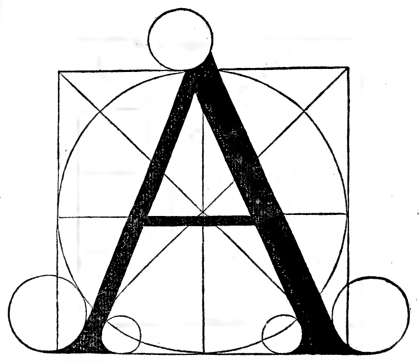
Lettera A (Folio 0139)¶
Questa letera A si cava del tondo e del suo quadro: la gamba da man drita vol esser grossa dele nove parti luna de lalteza. La gamba senistra vol esser la mita de la gamba grossa. La gamba de mezo vol esser la terza parte de la gamba grossa. La largheza de dita letera cadauna gamba per mezo de la crosiera, quella di mezo alquanto più bassa comme vedi qui per li diametri segnati.
Lettera B (Folio 0141)¶
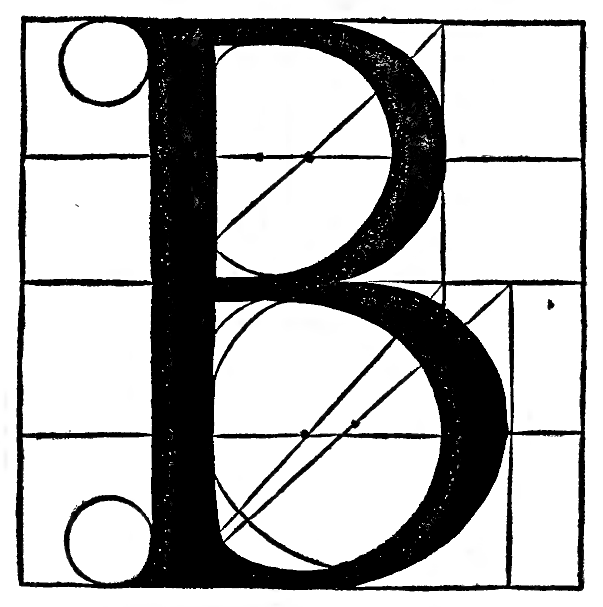
Lettera B (Folio 0141)¶
Questa letera B si compone de doi tondi e quello desotto sie lo più grando de li nove parti luna cioè vol esser li cinque noni de la sua alteza per diametro. E quella desopra vol esser li quatro noni medesimamente per diametro comme qui desopra proportionatamente negliochi te sapresenta.
Lettera C (Folio 0143)¶
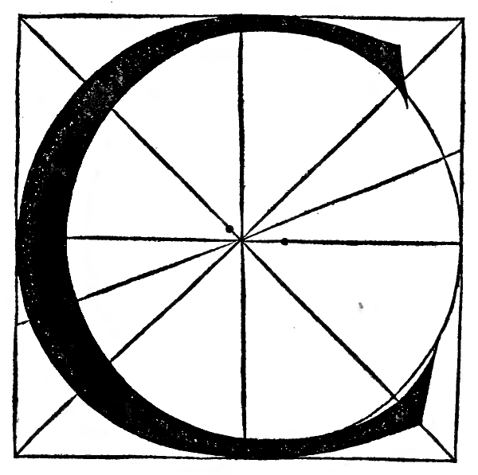
Lettera C (Folio 0143)¶
Questa lettera C se cava del tondo e del suo quadro ingrossando la quarta parte de fore e ancora de dentro. La testa desopra fenisci sopra la croci del diametro e circonferentia. Quella desotto passando la croci mezo nono apresso la costa del quadrato comme apare in la figura e cavasi comme uno O.
Lettera D (Folio 0145)¶
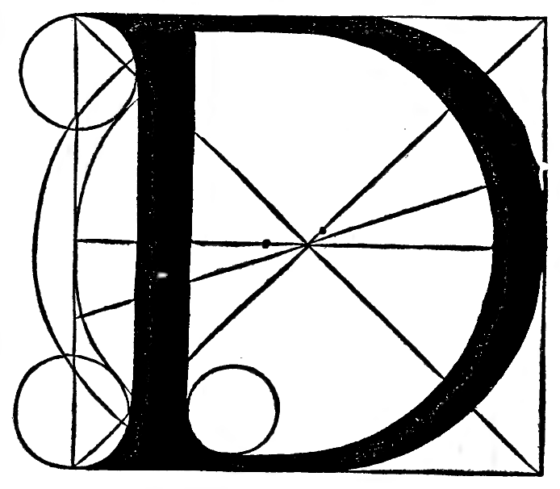
Lettera D (Folio 0145)¶
Questa letera D se cava del tondo e del quadro. La gamba derita vol esser de dentro le crosere grossa de nove parti luna; el corpo se ingrossa commo deli altri tondi. La apicatura desopra vol esser grossa el terzo de la gamba grossa et quella desotto el quarto over terzo.
Lettera E (Folio 0147)¶
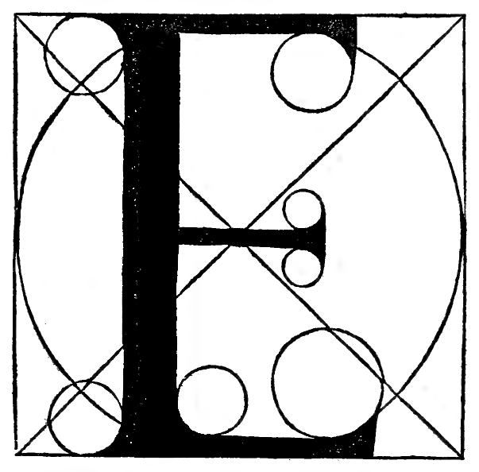
Lettera E (Folio 0147)¶
Questa lettera E se cava del tondo e del suo quadro. La gamba grossa vol esser de le nove parti luna. La gamba desopra vol esser per la mita de la gamba grossa, quella de sotto per simile. Quella de mezo per terza parte de la gamba grossa comme quella de mezo del A, e la detta lettera vol esser larga meza del suo quadro et sic erit perfectissima.
Lettera F (Folio 0149)¶
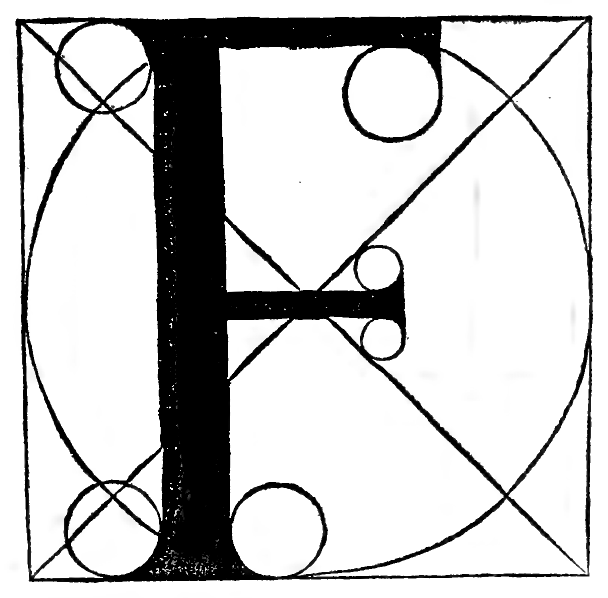
Lettera F (Folio 0149)¶
Questa lettera F se forma a quel modo come la lettera E ne più ne mancho excepto che F si e senza la terza gamba: come denanci havesti diffusamente al luoco de ditto E cum tutte suo proportioni, pero qui quello te basti.
Lettera G (Folio 0151)¶
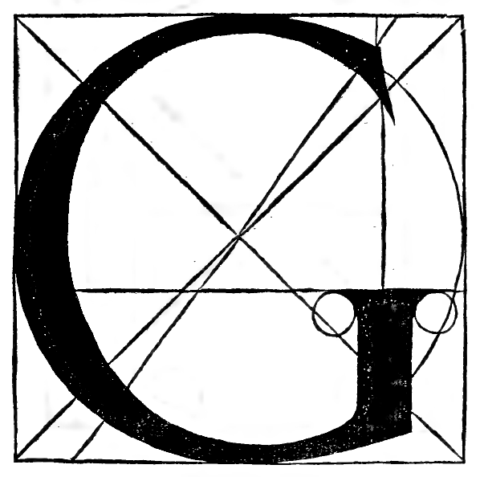
Lettera G (Folio 0151)¶
Questa letera G si forma commel C del suo tondo e quadro. La gamba deritta de sotto vol esser alta un terzo del suo quadro: e grossa de le nove parti luna de lalteza del suo quadrato.
Lettera H (Folio 0153)¶
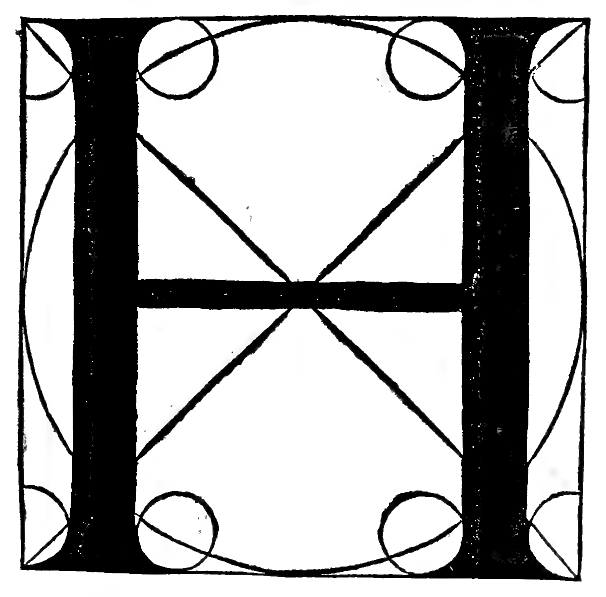
Lettera H (Folio 0153)¶
Questa lettera H si cava del tondo e del suo quadro. Le sue gambe grosse si fanno per mezo le crosiere cioè dove se intersecano li diametri del tondo e suo quadro. La grosseza de ditte gambe vol esser de le nove parti una de lalteza. E quella de mezo se fa per mezo el diametro: la sua grosseza vol esser la terza parte de la gamba grossa commel traverso del A.
Lettera I / J (Folio 0155)¶
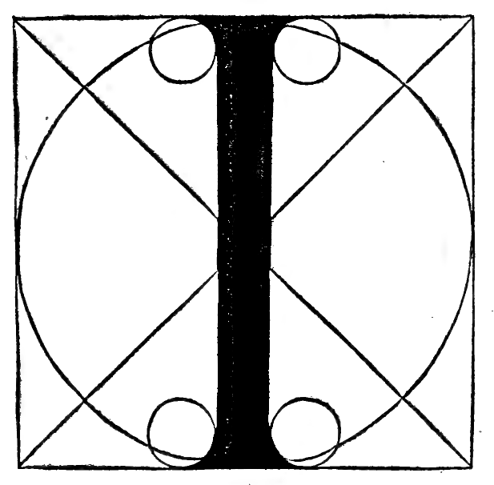
Lettera I / J (Folio 0155)¶
Questa lettera I se cava del tondo e del quadro; la sua grosseza vol esser de le nove parti luna che facil fia sua formatione fra laltre.
Lettera K (Folio 0157)¶
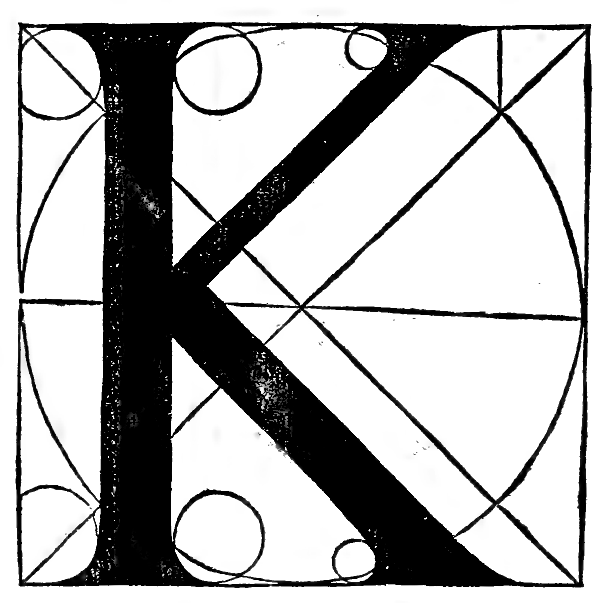
Lettera K (Folio 0157)¶
Questa lettera K se cava del tondo e del suo quadro tirando una linea per diametro del quadro; in questa linea se ferma e termina le due gambe per mezo la gamba grossa. La gamba de sotto vol esser grossa comme laltre gambe una parte de le nove. Quella de sopra la mita de la grossa comme la sinistra del A. Quella de sotto vol esser longa fin ala crociera over di fora. Quella de sopra dentro la crociera.
Lettera L (Folio 0159)¶
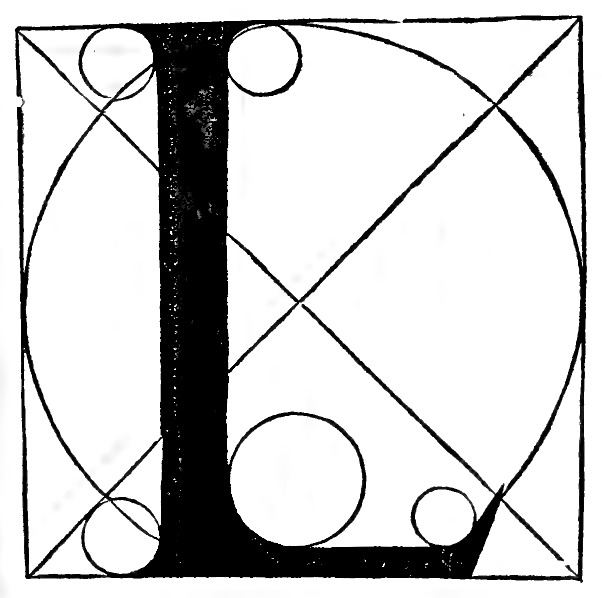
Lettera L (Folio 0159)¶
Questa lettera L se cava del tondo e del suo quadro. La sua grosseza vol esser de le nove parti una de laltezza. La sua largheza mezo quadro cum questi tondi soprascripti. La gamba sutile de sotto vol esser per la mita de la grossa comme quella del E et del F.
Lettera M (Folio 0161)¶
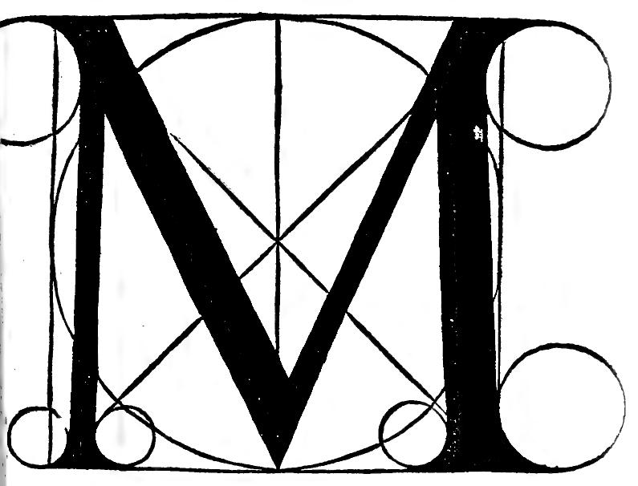
Lettera M (Folio 0161)¶
Questa lettera M se cava del tondo e del suo quadro. Le gambe suttili vogliano esser per mezo de le grosse comme la senistra del A. Le extreme gambe vogliano esser alquanto dentro al quadro; le medie fra quelle e le intersecationi de li diametri; lor grosseze grosse e sutili se referiscano a quelle del A comme disopra in figura aperto poi comprendere.
Lettera N (Folio 0163)¶
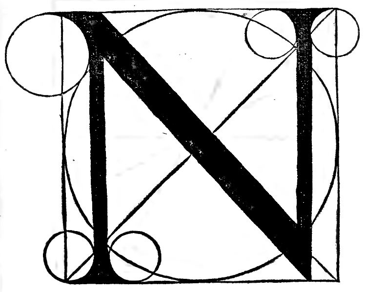
Lettera N (Folio 0163)¶
Questa lettera N se cava del suo tondo et etiam quadro. La prima gamba vol esser fora de la intersecatione de li diametri. La traversa de mezo vol esser grossa de le nove parti luna presa diametraliter. La terza gamba vol esser fora de la crociera. Prima gamba et ultima vogliano esser grosse la mita de la gamba grossa cioè duna testa.
Lettera O (primo modo perfectissimo) (Folio 0165)¶
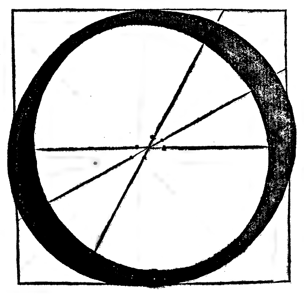
Lettera O (primo modo perfectissimo) (Folio 0165)¶
Questo O è perfectissimo.
Lettera O (secondo modo) (Folio 0167)¶
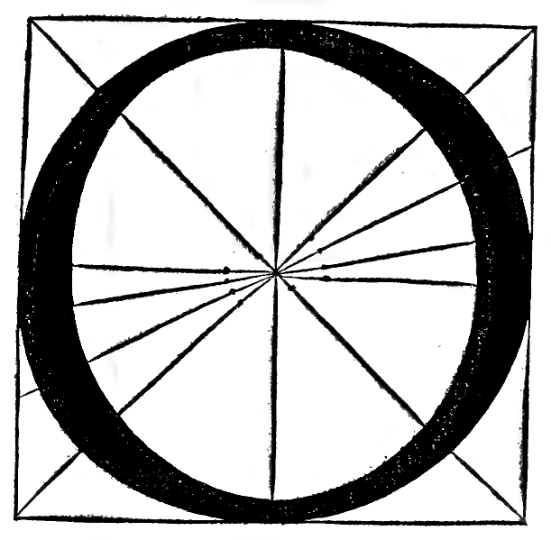
Lettera O (secondo modo) (Folio 0167)¶
Questa lettera O si cava del tondo e del suo quadro. Se divide in quatro parti cioè in croce per mezo le quatro linee; el corpo suo vol esser grosso de le nove parti luna; el corpo suo de sopra vol esser per mezo del suo grosso. Le sue pance una vol pender in su laltra in giù; el sutile del corpo vol esser per la terza parte de la sua pancia. E perche di lui sonno doi opinioni pero te no posto un altro a mio piacere perfectissimo e tu prendi qual te pare e di loro formarai el Q comme disotto intenderai a suo luoco.
Lettera P (Folio 0169)¶
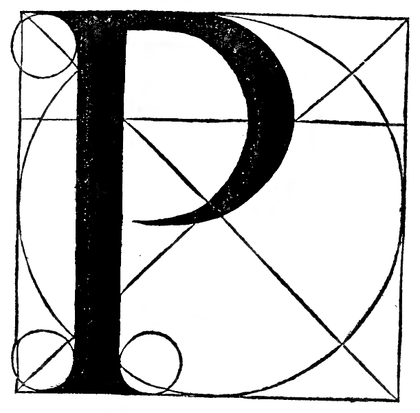
Lettera P (Folio 0169)¶
Questa lettera P si cava del tondo e del suo quadro. La sua gamba grossa vol esser de le nove parti luna. La forma del tondo vol esser grande comme quella del B da basso, e la sua grosseza de la pancia vol esser tanto quanto la gamba grossa e si vol principiar ditta lettera da le crociere del tondo grande cioè da le intersecationi de li diametri et sic erit perfectissima.
Lettera Q (Folio 0171)¶
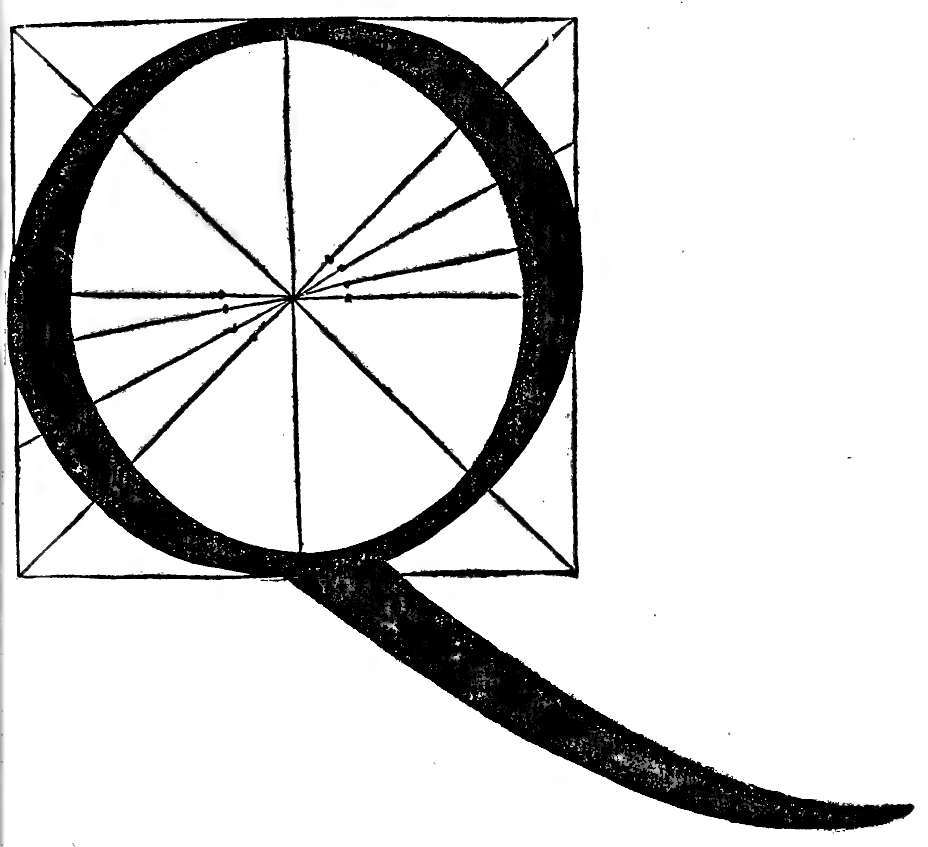
Lettera Q (Folio 0171)¶
Questa letera Q comme disopra dissi se cava del O, terminando sua gamba tre teste de sua altezza sotto el quadrato cioè de le nove parti le tre del suo quadrato overo diametro del suo tondo comme qui appare proportionata, guidando le pance grosse e sue sutili opposite a poncto comme del O fo dicto. E la sua gamba vol esser longa nove teste cioè quanto el suo quadrato a rectangulo, e la fine vol esser alta la poncta in su un nono de laltezza sequendo la curvita de la penna con la degradatione de la sua grosseza.
Lettera R (Folio 0173)¶
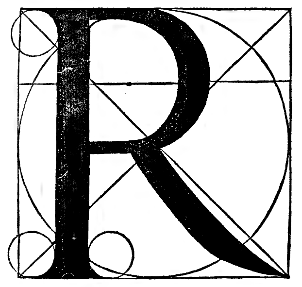
Lettera R (Folio 0173)¶
Questa lettera R se cava de la lettera B; el suo tondo sie de sotto dal centro una meza gamba. Tutta questa lettera vol esser dentro de le croci excepto la gamba storta vol uscir for de le croci fin al fin del quadro. Dicta gamba storta vol esser grossa de le nove parti luna terminata sutile in ponta nellangulo del quadro a modo de curve linee ut hic in exemplo patet.
Lettera S (Folio 0175)¶
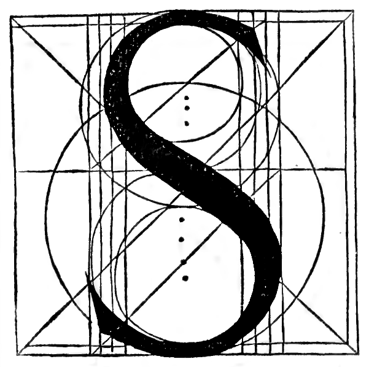
Lettera S (Folio 0175)¶
Questa lettera S se cava de octo tondi et questa sie la sua ragione ut hic in exemplo apparet, li quali per le sue paralelle trovando lor centri troverai quelli de sotto esser magiori de li de sopra un terzo del nono del suo quadro. La pancia de mezzo vol esser grossa el nono aponto de lalteza. Le sutili un terzo de la grosseza terminando le teste con sua gratia.
Lettera T (Folio 0177)¶
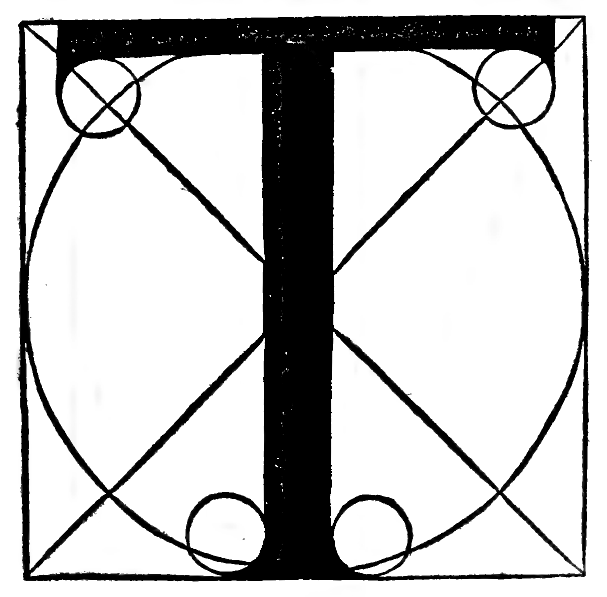
Lettera T (Folio 0177)¶
Questa lettera T se cava del suo quadro e tondo. La gamba grossa vol esser a poncto comme del I fo detto. Quella traversa vol esser grossa per la mita de la grossa comme quelle disopra al E et F e vol terminare mezza testa per lato da le coste del suo quadro e fia ala vista gratissima.
Lettera V (Folio 0179)¶
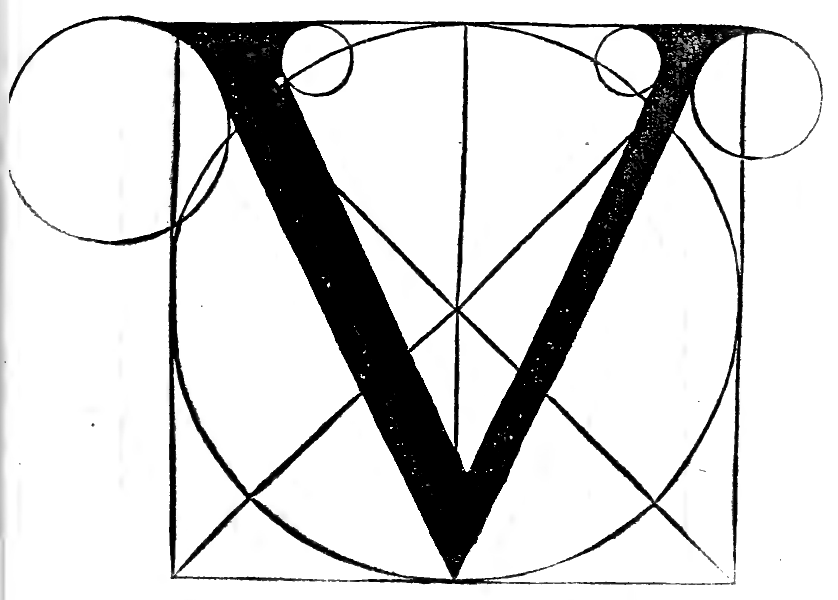
Lettera V (Folio 0179)¶
Questa lettera V se cava del suo quadro tutto intero. La gamba senistra vol esser grossa el nono del suo quadro presa diametraliter comme la dextra del A e traversa del N. La dextra la mita de la grossa pur diametraliter presa comme la senistra del A e termina poncto nella basa del quadro in fin del diametro del tondo.
Lettera X (Folio 0181)¶
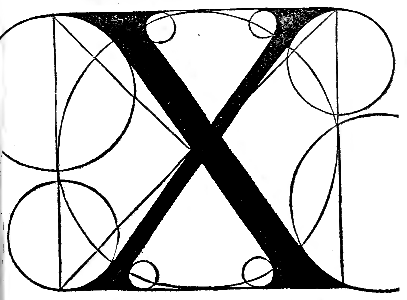
Lettera X (Folio 0181)¶
Questa lettera X vol tutto el suo quadro incrociando sue gambe nella intersecatione de li diametri. E luna vol esser grossa la nona parte de laltezza. Laltra la mita prese diametraliter terminando sue gambe con debita gratia secondo la forza de li tondi piccoli.
Lettera Y (Folio 0183)¶
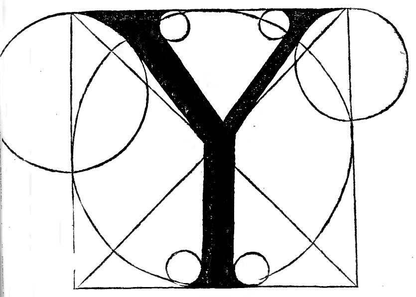
Lettera Y (Folio 0183)¶
Questa lettera Y vol tutto el quadro; le gambe dextra e senistra vogliano esser grosse comme la proportione de quelle del V, salvo che le terminano a poncto in su la intersecatione de li diametri, e da inde in giù si tira lor conjunctione ala basa del quadrato grossa el nono del quadrato; le teste de sopra finescano su li soi tondi comme vedi.